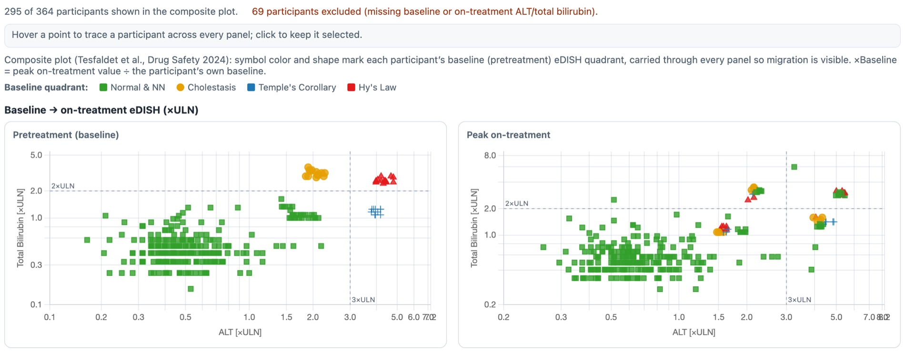
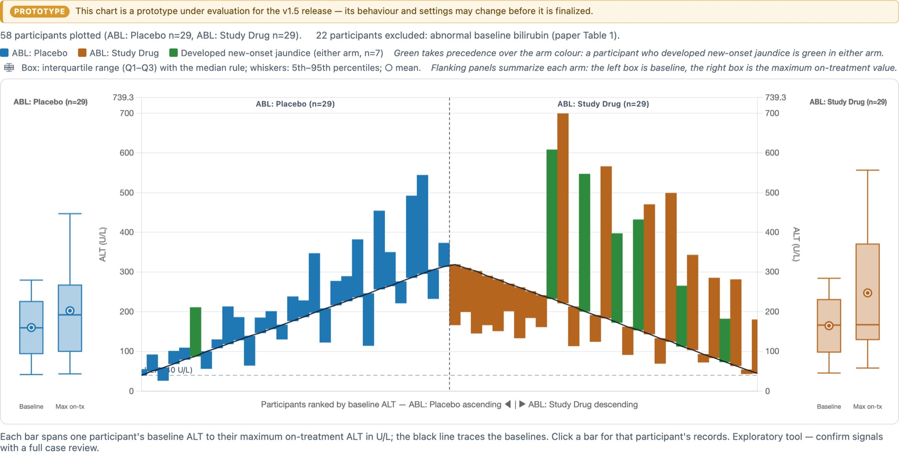
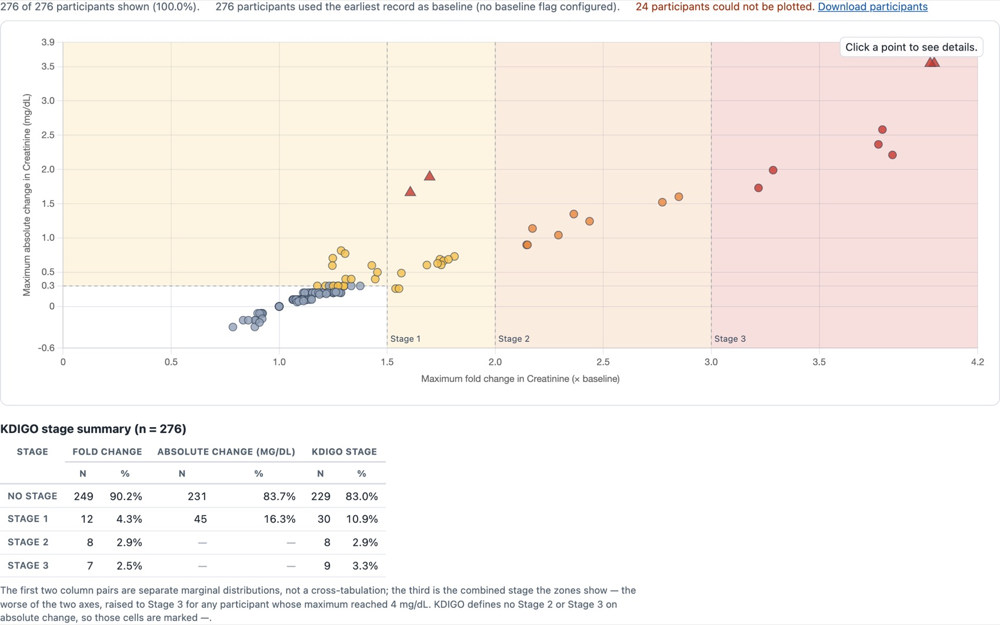

gsm.safety release review 2026-09-12
What v1.2.0 ships, annotated
One release carrying everything gsm.safety has merged since v1.1.0 in July. Two clinical corrections lead it: the composite liver view no longer reads a participant's own baseline as an on-treatment peak, and the safety overview reports thirteen deaths where it said four. Behind them, four chart widgets so that every renderer safety.viz exports is reachable from R, and the FDA safety guide's laboratory thresholds as package data with the first functions that apply them. The page is in four parts, each measured when its work landed; the dates and branches are stated at the foot of each.
deaths 4 → 13 of 762
2 participants leave the eDISH plot, 0 change quadrant
widgets 13 of 13 renderers
reference rows 46 + 80
candidate gsm.safety v1.2.0-RC1, dev → main
Why one release · @jwildfire, 2026-09-12
Three candidates had been opened for this work, one stacked on the next: v1.2.0 for the widget parity, v1.3.0 for the census, v1.5.0 for the FDA data, with the last two widgets between them under a version that never got a candidate. On 12 September he decided: "Let's go with option B, but squash it all into a single release: PR/Release notes/Demo for a single v1.2." This page is that demo; the release notes are one section; the candidate is one pull request from dev.
The liver chart stops reading a baseline as a peak
gsm.safety's composite liver view had been reading some participants' own baseline as if it were an on-treatment peak. This part swaps the chart library under all eleven widgets from safety.viz v1.4.0 to v1.7.0, where the rule was corrected, adds two charts that had no R binding at all, and puts a parity guard in CI. Everything below is a run performed on 2026-08-22: both bundles, the same data, the same widget code.
The same chart, drawn by the old bundle and the new one
Both captures below come from one report file. The widget code, the settings and all 57 929 rows of the example data are byte-identical between them — the two copies differ only in which safety.viz.js they load. Read the grey line above each chart pair: it is the module's own count of who made it into the plot.


What the difference is
A participant's on-treatment peak used to be the largest value recorded after study day zero. For a participant whose earliest liver record is not on day zero, that rule kept their baseline record in the on-treatment set — so their own starting value could be reported as their peak, and their peak could never come out below baseline. The rule is now: on-treatment is every record that is not the baseline record.
The two participants who leave the plot each have exactly one liver measurement. Under the old rule that single record served as both their baseline and their peak.
| Composite eDISH view | safety.viz 1.4.0 | safety.viz 1.7.0 |
|---|---|---|
| Participants plotted | 295 | 293 |
| Participants excluded | 69 | 71 |
| On-treatment: Normal & NN | 248 | 246 |
| On-treatment: Hy's Law | 13 | 13 |
| On-treatment: Temple's Corollary | 19 | 19 |
| On-treatment: Cholestasis | 15 | 15 |
No participant changes quadrant. The Normal & Not-Notable count falls by two because the two participants who leave the plot were being counted there. Both halves matter: a reader checking the quadrant counts against the chart would find them moved, and a reader asking whether anyone's clinical classification changed would find that nobody's did.
Why it matters
eDISH is read by eye. A point that sits at its own baseline is indistinguishable from a point that genuinely peaked there, and a participant who improved on treatment could not be drawn below the diagonal at all. On this data nobody crosses into Hy's Law because of it — but that is a property of this study, not of the rule.
The same corrected reduction feeds the migration view and the new ALT waterfall. The plain eDISH scatter uses a different per-record path and is unaffected.
Try it
- Open the hep-explorer demo on the safety.viz site — it runs the corrected bundle.
- Choose Composite plot (baseline-referenced) from the View control.
- Read the count line above the charts, then compare it with the capture on the left.
Why a baseline became a peak, in the data itself
The example data records a study day for every measurement. These are every ALT record the three affected participants have — read out of the package's own ExampleData("adbds") on 2026-08-22, nothing else selected or filtered.
| Visit | Study day | ALT (U/L) | ULN | ×ULN | Old rule | New rule |
|---|---|---|---|---|---|---|
| Unscheduled 1.1 | 1.1 | 43 | 43 | 1.0000 | counted as on-treatment | baseline |
| Week 2 | 4.0 | 15 | 43 | 0.3488 | on-treatment | on-treatment |
There is no day-zero record, so the baseline resolves to the day-1.1 measurement. Because 1.1 is after day zero, the old rule kept that same record in the on-treatment set and reported the peak as 1.0000 ×ULN — the participant's own starting value. The peak is 0.3488 ×ULN, and this participant improved rather than peaked.
| Participant | Visit | Study day | ALT (U/L) | ×ULN | Old rule | New rule |
|---|---|---|---|---|---|---|
| 01-703-1197 | Unscheduled 1.1 | 1.1 | 18 | 0.5625 | baseline and peak, both 0.5625 | baseline only — no on-treatment record |
| 01-708-1236 | Unscheduled 1.1 | 1.1 | 13 | 0.4062 | baseline and peak, both 0.4062 | baseline only — no on-treatment record |
Total bilirubin behaves the same way for both: one record, serving as its own peak. A participant with no measurement after baseline has no on-treatment peak to plot, and is now counted among the excluded rather than drawn at their starting position.
How far this reaches
- 24 of the 318 participants carrying liver measurements have no day-zero record. Those 24 are exactly the population the two rules treat differently.
- Of the 24, eleven are visible in the composite view: nine whose peak moves and two who leave it. The rest already had their baseline outranked by a later value, so both rules pick the same peak.
- The count of 71 excluded is against all 364 participants in the dataset. 46 of them carry no liver measurements at all; among the 318 who do, the drop goes from 23 to 25.
The eleven participants, named
Read out of each bundle's own reduction — the function whose return value the composite view hands to the chart — for the same 364 participants. Values are peak on-treatment, in multiples of the upper limit of normal.
| Participant | Peak ALT was | is now | Peak bilirubin was | is now | Quadrant |
|---|---|---|---|---|---|
| 01-701-1341 | 1.0000 | 0.3488 | 0.4071 | 0.4071 | unchanged |
| 01-702-1082 | 1.1562 | 1.0938 | 0.4886 | 0.4886 | unchanged |
| 01-703-1096 | 0.3438 | 0.3125 | 0.3257 | 0.3257 | unchanged |
| 01-703-1100 | 0.5625 | 0.5312 | 0.6514 | 0.4071 | unchanged |
| 01-704-1008 | 0.5000 | 0.4688 | 0.7329 | 0.7329 | unchanged |
| 01-705-1349 | 1.2188 | 1.2188 | 1.3029 | 1.1400 | unchanged |
| 01-708-1348 | 0.4688 | 0.4375 | 0.4071 | 0.4071 | unchanged |
| 01-709-1301 | 1.8529 | 1.8529 | 0.4886 | 0.4071 | unchanged |
| 01-711-1012 | 0.4706 | 0.4706 | 0.4071 | 0.3257 | unchanged |
| 01-703-1197 | 0.5625 | not plotted | 0.3257 | not plotted | leaves the plot |
| 01-708-1236 | 0.4062 | not plotted | 0.3257 | not plotted | leaves the plot |
Nine peaks move and not one of them rises. Every other participant's plotted position is identical between the two bundles, which is the other half of the claim worth checking: the rule change is confined to the participants it was meant to reach.
What is being shipped is what was measured
- The bundle vendored in this release hashes to
ecd740ff…, and the bundle the public safety.viz demo serves today hashes to the same value — checked by downloading it while writing this page. - That bundle contains the corrected identity check once. The safety.viz 1.4.0 bundle that gsm.safety v1.1.0 ships contains it zero times.
- Both report files used for the captures are the same 6 984 049 bytes and differ only in the name of the directory they load the library from.
The hepatic ALT waterfall and the KDIGO nephrotoxicity explorer
Both existed in the JavaScript library and had no R binding. Both captures below were produced by running the package's own report workflows on 2026-08-22 with the release's code and the release's bundled example data.

Widget_HepWaterfall() on the synthetic abnormal-baseline cohort: 58 of 80 participants plotted, 22 excluded for abnormal baseline bilirubin per the source paper's Table 1, seven marked as developing new-onset jaundice. The chart exists for trials where a normal-baseline eDISH cannot be formed at all.
Widget_NepExplorer(): 276 participants staged, 24 that could not be plotted named rather than dropped silently, and a summary table that says in words that its first two column pairs are separate marginal distributions rather than a cross-tabulation.Both are marked provisional upstream, and the widgets carry that through
The waterfall renders behind a prototype banner and the nephrotoxicity explorer is marked experimental pending clinical confirmation of the KDIGO staging ladder. That is the chart library's own labelling, visible on the capture, and wrapping them in R does not promote them.
The part that outlives the release
A check now runs weekly against the latest safety.viz release: a renderer with no widget fails it unless a deferral names a filed requirement. A deferral that cites nothing is refused, so falling behind quietly stops being available.
When this part was measured, two renderers were still unwrapped, the participant profile and the time-to-event chart, because both need two datasets where the widget contract carried one. Part 3 of this page is where they arrive, and the deferral list is empty in this release.
Try them
- The ALT waterfall demo — drag the jaundice threshold and watch the green bars change.
- The KDIGO explorer demo — click a point in a stage zone for that participant's creatinine records.
- The eDISH demo — the chart this release corrects.
The safety census rebuilt on metrics
A safety overview leads with denominators: how many participants, how many dosed, how many died. gsm.safety computed those inside one function, from whatever columns it was handed, and got several of them wrong. This part replaces every one with a metric that publishes its own numerator, its own denominator and a record of where the figure came from, adds the report that reads them, and keeps SafetyCensus() by name with its arithmetic moved out. Both versions were run on 2026-08-22, on the same study, in the same session.
The death count
On the ecosystem's bundled study, the safety overview reported four deaths. Thirteen enrolled participants have a death recorded. The old count never opened the death domain at all: it matched the text of a discontinuation reason and counted whoever it found, enrolled or not.
| Where a death is recorded | Participants | Of them enrolled |
|---|---|---|
| The death domain | 12 | 10 |
| Discontinuation reason reads "Death" | 4 | 3 |
| Named by both | 0 | 0 |
| Union | 16 | 13 |
Three of the sixteen were never enrolled — S42425, S97688 and S78705 — and the metric anchors every figure to the enrolled population of 762, so the published number is 13. The old count did not anchor, which is why it reported all four of its matches including the one who was never enrolled.
The correction is four to thirteen, and it is stated that way deliberately
An earlier version of this work said the function reported one death, and that version circulated for about a day before being corrected. One is what it reported on gsm.core 1.2.0, where a single participant's discontinuation reason said Death. The bundled study moved between gsm.core versions under the same name: on 1.3.1 four participants carry that reason, and 762 are enrolled rather than 760.
So this is a threefold correction to a published clinical figure, not a thirteenfold one. The metric's own figure of 13 was re-measured on 1.3.1 and did not move.
The bundled study AA-AA-000-0000 | gsm.core 1.2.0 | gsm.core 1.3.1 |
|---|---|---|
| Participants in the subject domain | 1000 | 1000 |
| Enrolled | 760 | 762 |
| Discontinuation reason reads "Death" | 1 | 4 |
This is the trap the release exists to close, and it is also the reason this page was not built on the machine's own library: rendering the census here would have republished the superseded figures.
The census, before and after, in one session
Both runs call SafetyCensus() on the same mapped domains from the same study, minutes apart: the census as v1.1.0 ships it first (the widget work in part 1 does not touch it), then this release's. Nothing below is copied from the release notes or the qualification records — those were read afterwards, to check this run against them.
| Figure on the safety overview | Before, as v1.1.0 computes it | This release | What the old number was doing |
|---|---|---|---|
| Enrolled participants | 762 | 762 | unchanged |
| Randomised to an arm | blank | 577 | read a treatment-arm column no standard domain carries |
| Received study drug | 744 | 762 | inferred dosing from time on treatment exceeding zero |
| Deaths | 4 | 13 | matched a discontinuation reason, never read the death domain |
| Person-years on study | 73.2 | 73.2 | unchanged |
| Person-years on treatment | 29.5 | 29.5 | unchanged |
| Participants with a lab result | 598 | 598 | unchanged |
| Participants with an ECG | blank, of 762 | absent, and it says so | published a blank where the domain is missing |
| Participants with a reported AE | 661 | 661 | unchanged |
| Participants with a disposition record | 100 | 76 | counted every identifier in the domain, enrolled or not |
| Completed | 22 | 19 | counted the same way, and inside a table rather than as a figure |
| Discontinued | 10 | 9 | counted the same way, and inside a table rather than as a figure |
| Median days on treatment | 15 | no longer published | wants an averaging step no metric performs yet |
| Ongoing / Not in the disposition domain | 64 / 662 | no longer published | read out of free text, and a subtraction |
Two figures left the page rather than moving, and they are named rather than dropped
- The median days on treatment needs an averaging step in the metric layer. Publishing it from the report would put a second counting lane back, which is the defect this release removes.
- The per-visit data-coverage table is the thirteenth census figure and is carried. Under the standard mapping the lab domain arrives with no visit column at all, so a coverage figure cannot key on a visit — and the expected count needs a scheduled study day no domain supplies. The page renders with no coverage section rather than an empty table, because an empty table reads as a study with no data.
Every figure that is published was measured twice, by routes that share no code, and the pair has to agree or the script exits non-zero. Run either yourself from the branch:
# the records read directly with base R, against the pipeline, figure by figure Rscript tools/qualify-census-metrics.R Rscript tools/qualify-death-count.R # AGREE - every figure measured twice, and saf0011 stops rather than publishing a zero. # AGREE - 13 participants, of 762 enrolled.
Both were run for this page and both agreed. Every row measured matches what inst/qualification/ records, including the eleven figures in the metrics record and all four counts in the death record.
The census report, rendered
One report, reading what the metrics published and computing nothing of its own. Rendered for this page by running the whole pipeline — the standard mapping, the eleven census metrics with a domain on this study, the reporting model, then the report workflow.

- Every figure sits beside the denominator its own metric published, and beside what that denominator counts.
- Person-time is published in days and presented in years — both numbers are on the page.
- The foot of the page lists what each metric published verbatim, including the one that published nothing.
The page carries no flag column and no cut-point. These metrics declare no threshold and publish an empty flag, so a census figure cannot move a site's risk score — and a result arriving with a flag is refused rather than presented.
Why it matters
A figure that is wrong is now wrong in exactly one place. Before, the same count could be produced by a function and by a metric and the two could disagree without anything noticing. Now the function runs the metrics and reads what they published, so there is one counting lane and the page is a reader of it.
The test that proves it is not the one that checks the numbers. A structural check reads the function's body and every helper it calls, and fails if an arithmetic operator or an aggregating function appears in any of them. A rebuild that left the counting in place and put a workflow beside it would pass an arithmetic test by accident; it cannot pass that one.
Try it
- Compare the top table with the foot of the page: 73.2 person-years above, 26 754 participant-days below, the same figure twice.
- Find
saf0011in the foot: it reads "not run for this study" rather than reporting a zero. - Read the denominator column — every figure is of 762, and the page says what 762 counts.
What happens when a study does not collect something
A zero means measured and found none. A blank means the reader has to guess. Both were being published where the honest answer is that nothing was collected. Run for this page: the same call, the same study, with the death domain withheld.
# the death domain supplied Deaths 13 of 762 # the death domain withheld — the same call, everything else identical Deaths NA # and it says so, rather than leaving the reader to notice: Warning: No domain was supplied for Deaths (Study) (Mapped_Death); Participants With an ECG (Study) (Mapped_EG). Those figures are absent rather than zero.
Three states, kept apart, and checked in the strongest form available
- Every column every census definition declares is dropped in turn, and the metric has to stop rather than publish — 34 combinations across the eleven metrics, plus four for the death count.
- This matters because the underlying check only warns on a missing column: it stops on a missing data frame, but a domain arriving without a column it needs would otherwise sail through. That was verified again on gsm.core 1.3.1 rather than taken from the design, which had called the false-zero problem fixed by construction.
- The ECG metric is written, declares its domain, and stops on every study available today — no mapping package ships an ECG mapping and the bundled study has no ECG records. Its qualification is structural rather than measured, and the suite fails if a bundled ECG domain ever appears, so it cannot sit there passing on nothing.
On a study that maps no death domain, the death figure now reads as not collected instead of reading a discontinuation reason. That is correct, and it is also a visible change: the demo study's deaths and randomised tiles will read as not collected until its mapping phase adds those two domains.
Every chart safety.viz draws can now be drawn from R
The two renderers part 1 left on the deferral list ship here: the Kaplan-Meier time-to-event display and the participant profile. Both were held back by the same thing, and it was never the JavaScript: each needs a second data frame, and the widget contract carried one. The contract is now general. A widget reads the datasets its module's data contract names rather than assuming there is one, and the eleven existing widgets return byte-for-byte the payload they returned before. The deferral list in .github/parity-allowlist.yaml is empty, and a test asserts it equal to the suite's own list so the two can no longer disagree.
| Widget | Frames | What it draws |
|---|---|---|
Widget_TimeToEvent(dfResults, dfPopulation, ...) | 2 | Kaplan-Meier curves for an endpoint composed while looking at it: multiselect filters over the adverse events decide which events qualify, each participant's first qualifying event counts, everyone else is censored at their own follow-up-end day. Greenwood log-log pointwise 95% bands, censor marks, the at-risk and cumulative-event tables under the axis. Cumulative incidence is the default orientation; survival is a control away. |
Widget_ParticipantProfile(dfResults, chrParticipants, dfAE, ...) | 1 + 1 optional | The drill-down as a report of its own: a demographics header, labs over time standardised to multiples of the upper limit of normal or of baseline, adverse-event tracks on the same study-day axis, a measure table whose sparklines expand into an inset. A cohort of more than one is ranked worst-first and stepped through. Name the cohort with chrParticipants; without one the profile waits for a selection a static report never sends. |
ExampleData("adsl") | One row per participant with treatment arm, follow-up-end study day and end-of-study status: the population denominator the time-to-event widget censors against, vendored byte-identical from the safety.viz demo data. |
Proven by what they painted, not by a file existing
A widget that loads nothing looks exactly like one that works: a binding that constructs its renderer and never hands it data raises no console error, still emits its element, still ships the bundle and still carries every data value in the page. Both widgets were opened in headless Chromium and measured: 95,478 painted pixels for the curves and 19,717 for the profile, against 0 for a deliberately broken control that no assertion in the suite could tell apart from the real one. A new test now asserts that every binding both constructs and feeds its module, proven red with the feed call removed and green with it restored.
Two things this part settles that were open
- The design question the participant profile was waiting on turned out to be two-thirds already answered by the vendored bundle: the compound widget hosting a chart plus a rail cannot be built from R because safety.viz does not export
profileRailon its public object, and the profile-enabled lab widgets already shipped in part 1 (Widget_HepExplorer(),Widget_Histogram()andWidget_OutlierExplorer()mount the rail from theirprofilesetting). The standalone surface was the only real gap, and it is what this part adds. - Five workflows had been failing before they started, two of them the qualification checks. The upstream templates moved organisation on 4 August; GitHub redirects an action called from a step but not a reusable workflow called from a job, so
pkgdown-all,test-coverage,qcthatandworkflow-template-checkhad failed every run since with zero jobs and raised no check run, and the release workflow failed the same way on v1.1.0, which published with no artifacts. Every workflow file is now the current upstream template (gsm.safety#73), so this release publishes its artifacts and its pull request shows every check.
Marked experimental, on purpose
When @jwildfire approved safety.viz v1.7.0 he kept its time-to-event chart marked experimental until an external review confirms the Kaplan-Meier implementation. A chart marked experimental in the library and unmarked in its R wrapper would be the same wrong-confidence problem on a different surface, so the R widget carries the marking too until that review completes (the un-marking is filed as obot.roadmap#182).
What this page cannot show
No capture was made for this part when it landed, and the package's documentation site rebuilds only when the release is tagged, so the two widgets' reference and gallery pages publish with the tag rather than before it. The safety.viz twins below run the same bundle on the same demo data and draw what the widgets draw.
Try it
- Open the time-to-event demo on the safety.viz site: change the event filters and watch the endpoint recompose; switch cumulative incidence to survival.
- Open the participant-profile demo: step through a ranked cohort.
- From R, install the candidate with
pak::pak("jwildfire/gsm.safety@dev"), then runWidget_TimeToEvent(ExampleData("adae"), ExampleData("adsl"))andWidget_ParticipantProfile(ExampleData("adbds"), chrParticipants = "01-701-1341", dfAE = ExampleData("adae")). - Open the parity allowlist on
devand read that it is empty, and why.
The FDA safety guide's rules, in R once
The FDA's Standard Safety Tables and Figures guide is mostly rules rather than drawings: three levels of laboratory abnormality, values so extreme they are treated as errors, results read as multiples of the upper limit of normal. Nothing in R carried those rules. This part is the foundation the static figures will stand on: the guide's appendix tables as package data, the first three functions that apply them to a lab table and hand the table back with the answers added, a requirement matrix that keys every one of the guide's 22 figures, and a column-by-column check of what the demo data can draw. Every number was produced from dev on 2026-09-11.
The guide's appendix tables, as package data
Appendix Tables 56 and 57 give the level 1, 2 and 3 abnormality thresholds the guide counts outliers against; Tables 58 to 60 give the values beyond which a result is treated as a laboratory or recording error and left out of the mean-change figures. They existed only as a PDF. They are now two data frames, transcribed row for row, with the printed criterion kept beside the parsed number and the guide page on every row.
| Guide table | Page | Printed rows | Dataset rows |
|---|---|---|---|
| Table 56, abnormality levels, chemistry | 119 to 120 | 33 | 33 |
| Table 57, abnormality levels, hematology | 121 | 13 | 13 |
FDA_AbnormalityLevels | 46 | 46 | |
| Table 58, extreme values, chemistry | 122 to 123 | 26 | 52 |
| Table 59, extreme values, hematology | 123 | 9 | 18 |
| Table 60, extreme values, vital signs | 124 | 5 | 10 |
FDA_ExtremeValues | 40 parameters | 80 |
The extreme-value table is long: every parameter appears twice, once in US-conventional units and once in SI, because the guide prints both and the data decide which one applies. The example data are mostly SI with bilirubin in both unit systems, which is exactly the case that would go wrong with one column.
> subset(FDA_AbnormalityLevels, Panel == "Liver Biochemistry", + select = c(Parameter, Direction, Basis, Operator, Level1, Level2, Level3, GuidePage)) Parameter Direction Basis Operator Level1 Level2 Level3 GuidePage Alkaline phosphatase high uln_multiple > 1.5 2.0 3 120 Alanine Aminotransferase high uln_multiple > 3.0 5.0 10 120 Aspartate Aminotransferase high uln_multiple > 3.0 5.0 10 120 Total Bilirubin high uln_multiple > 1.5 2.0 3 120 > subset(FDA_ExtremeValues, Parameter == "Glucose", select = c(Specimen, UnitSystem, Unit, Low, High)) Specimen UnitSystem Unit Low High plasma US mg/dL 10.0 2700 plasma SI mmol/L 0.6 150
Where the transcription had to read, it says so on the row
The hemoglobin level 1 criteria are printed as ranges (12.5 to 13.5 g/dL for men); because the levels are cumulative the row stores the upper bound and keeps the printed text beside it. The platelet unit is kept as the guide prints it although the thresholds read as cells per microlitre. Three hematology thresholds printed without a comparator are read as greater-than like the rest of their table. Each of these is a Note on its row, and the hand-checked CSVs and the build script are in data-raw/, so a correction is one edit in one place.
Every later phase reads these two tables: the DILI plots for their 2x and 3x cuts, the outlier tables for their three levels, the mean-change figures for what to exclude. Transcribing them once, with tests, is what stops each figure carrying its own copy of the FDA's numbers.
Try it
- Install the candidate:
pak::pak("jwildfire/gsm.safety@dev"). data(FDA_AbnormalityLevels); data(FDA_ExtremeValues).- Open page 121 of the guide PDF and compare any Table 57 row with
subset(FDA_AbnormalityLevels, Table == 57). ?FDA_ExtremeValuesfor the column contract and the reading rules.
Three of the guide's rules, applied once and handed back
Each function takes the long lab table the example data already use, one row per participant per test per visit, and returns the same table with its answer added as new columns. Nothing is dropped and nothing is summarised, so a static figure and its interactive twin can read the same derived values. Derive_ULNMultiple() puts each result on the multiple-of-ULN scale. Derive_AbnormalityLevel() grades it against Tables 56 and 57 and says which direction and which printed criterion fired. Derive_ExtremeValueFlag() marks the results Tables 58 to 60 would exclude.

Every liver result in the example data, graded. The dashed lines are the Table 56 cuts read from the dataset above, not typed into the plot; the colours are the grade the function assigned. Bilirubin carries 30 level 3 results and alkaline phosphatase 12, which is what the eDISH quadrants will be drawn from in phase 1.
> dfLabs <- ExampleData("adbds") > dfLabs <- Derive_AbnormalityLevel(dfLabs) Derive_AbnormalityLevel left NA for records it could not evaluate: unit differs from the criteria's (mg/dL): Blood urea nitrogen in mmol/L, Calcium in mmol/L, Cholesterol (total) in mmol/L, Glucose in mmol/L, Phosphate in mmol/L qualifier 'Fasting' needs a column this function does not take: Glucose unit differs from the criteria's (g/dL): Albumin in g/L, Protein (total) in g/L basis 'baseline_multiple' needs a baseline column this function does not take: Creatinine needs a sex column (strSexCol) for the sex-qualified rows: Hemoglobin ... (the full list names every skipped parameter and why) > dfGraded <- dfLabs[!is.na(dfLabs$AbnormalityLevel) & dfLabs$AbnormalityLevel > 0, ] > table(dfGraded$TEST, dfGraded$AbnormalityLevel) 1 2 3 Alanine Aminotransferase 102 10 0 Alkaline Phosphatase 121 14 12 Aspartate Aminotransferase 93 0 0 Bilirubin 15 71 30 Chloride 243 27 0 Leukocytes 35 9 0 Potassium 40 9 0 Sodium 5 2 0
A threshold is compared only in its own unit, and the function says what it skipped
Table 56 prints glucose in mg/dL; the example data carry it in mmol/L. Dividing or multiplying silently would be a second, unstated rule. The function grades an absolute threshold only when the record's unit matches, folds spellings of the same unit (mEq/L and mmol/L for the electrolytes, GI/L and the guide's x 10^9 cells/L), converts nothing, and prints the parameters it left ungraded and the reason. The ULN-multiple rows, the whole liver panel among them, grade in any unit because the multiple has none.
The same discipline holds for the extreme values: hemoglobin in mmol/L matches neither the g/dL nor the g/L threshold row, so it is left unflagged and named, while sodium, bilirubin, the transaminases and the vital signs match in the data's own units. On the pilot data nothing is extreme, which is the expected answer for a clean trial dataset and is asserted in the suite.
| Function | Requirement rows | What the tests assert |
|---|---|---|
Derive_ULNMultiple() | FDA-RULE-001 | value over its own ULN; NA for a missing or non-positive ULN; the peak per participant reproduces what Input_HysLaw() computes for the same people |
Derive_AbnormalityLevel() | FDA-RULE-002, -003, -016 | one probe beyond each defined level of every absolute and ULN-multiple row in Tables 56 and 57, in both directions; the on-threshold case for strict and non-strict operators; the highest level wins; a substitute criteria table; the sex-qualified rows with and without a sex column |
Derive_ExtremeValueFlag() | FDA-RULE-004, -005 | a value beyond a threshold in either unit system is flagged; a missing threshold is no bound; the printed value itself is not extreme; an unmatched unit is NA with a message |
The design calls this the L1 contract: normative rules live in R once, and the renderers read enriched participant-level data. Phase 1 will prove it on the DILI pair, where safety.viz's hep-explorer today computes its own ULN multiples in the browser.
Try it
dfLabs <- Derive_ULNMultiple(ExampleData("adbds"))and look atULNMultiplefor any transaminase row.- Run
Derive_AbnormalityLevel(dfLabs)and read the message: it is the list of what the demo data cannot be graded on, and why. - Pass
strSexCol = "SEX"and watch the hemoglobin rows change. - Give
Derive_ExtremeValueFlag()a row withSTRESN = 3000andSTRESU = "mg/dL"for Glucose and see it flagged high.
Every figure in the guide now has a key
The safety.viz renderers each carry a requirement matrix, and a test cites a row by its ID. The FDA figures now have one too, in the same shape: FDA-FIG-001 to FDA-FIG-022 for the 22 figures, numbered as the guide numbers them, and FDA-RULE-001 to FDA-RULE-016 for the rules the guide states once and several displays read. A static rendering here and an interactive one in safety.viz cite the same ID, so their evidence meets on one row.
$ grep -c '^| FDA-FIG-' requirements/fda-stf.md 22 $ grep -cE '^\| FDA-[A-Z]+-[0-9]+' requirements/fda-stf.md 38 $ grep -rho 'FDA-RULE-[0-9]*' tests/testthat/ | sort | uniq -c 4 FDA-RULE-001 6 FDA-RULE-002 1 FDA-RULE-003 3 FDA-RULE-004 2 FDA-RULE-005 1 FDA-RULE-008 1 FDA-RULE-016
| Phase | Figures | Engine | Requirement |
|---|---|---|---|
| 0, this release | none; rules 001, 002, 004 and 005 ship as the datasets and the three functions | obot.roadmap#9 | |
| 1 | F7, F8, F15, F22, F10, F16 to F20, F2, F3 | DILI quadrant scatter, shift scatter, box plot over time, dot and risk-difference forest | obot.roadmap#323 |
| 1b | F5, F21, F12, and the Kaplan-Meier family F1, F4, F11, F13, F14 | paired retention bars, incidence-rate point-range, wrapped Kaplan-Meier | obot.roadmap#324 |
| not scheduled | F6, F9 | mean change line with CI |
A test in this package ends with the issue it proves, and now also names the row: test_that("Derive_ULNMultiple divides the result by the record's own ULN (FDA-RULE-001) (#78)", ...). The matrix test checks that every ID any test cites exists in the file, so a row cannot be renamed out from under its evidence.
Try it
- Open
requirements/fda-stf.mdondevand findFDA-FIG-007: the eDISH plot, its engine, its twin and its phase. - Read
FDA-RULE-010, the 30-day pairing window, and its note on why the interactive twin does not apply it yet. requirements/README.mdsays how a new row is keyed.
What the demo data can draw, column by column
The guide is written against ADaM. gsm.safety holds two other shapes: the vendored example data and the Mapped_* domains gsm.mapping produces. The design assumed they aligned and said phase 0 should check. The note lists, for ADSL, ADAE, ADLB and ADVS, every column the 22 figures and the three derivations need, marks each as found, mapped, derivable or missing, and records a decision for every gap.
| Domain | Needed | Found | Mapped | Derived | Missing | Decisions |
|---|---|---|---|---|---|---|
| ADSL | 9 | 5 | 3 | 1 | 0 | vendor treatment dates, death and safety flags, sex and age from pharmaverseadam; arm is an engine argument |
| ADAE | 13 | 8 | 1 | 1 | 3 | derive the treatment-emergent flag from start day; vendor outcome and relatedness; OCMQ and action taken are out of scope on the demo data |
| ADLB | 17 | 10 | 0 | 4 | 3 | derive baseline, change and the baseline flag once; vendor study day, without which there is no 30-day DILI window; absent analytes are out of scope |
| ADVS | 12 | 7 | 0 | 3 | 2 | the same derivations on the vital-sign rows; respiratory rate is absent; pulse stands in for heart rate |
| Total | 51 | 30 | 4 | 9 | 8 | two vendoring passes, one derivation helper, three declared exclusions |
Three things the check found that the design did not know
No Mapped_* domain carries a treatment arm, so the engines take an arm column as an argument and render a single arm without one. gsm.mapping's standard lab mapping names the result rptresn and has no upper limit of normal, unit or visit, while this package's own metric workflows declare lbstresn and lbstnrhi; that split is recorded for the phase 1 requirement. And pharmaverseadam shares the pilot study's participants exactly, all 254 of them with the same arm assignments, which makes vendoring the missing columns a join rather than a reconstruction.
The note ends with the column contract every lab and vital-sign engine codes against, with the default names in the example data's spelling and their ADaM and Mapped_* equivalents, so phase 1 starts from an agreed frame rather than rediscovering it per figure.
Try it
- Read
design/fda-adam-alignment.mdondev. - Find the ADLB row for study day and its decision, then the DILI rule
FDA-RULE-010in the matrix that depends on it. - The last section is the contract; every default there is a column
ExampleData("adbds")already has, or says how it will get one.
Reading this page
Each part was measured when its work landed, on the branch it landed on. Those branches are all inside dev, the candidate's branch, so what the parts measured is what the candidate ships; nothing was re-measured for the consolidation, and each part's provenance is kept as written.
Part 1
What produced the numbers
- The widget-parity increment as it stood on
release/v1.2.0at4a436ce(the same commits are ondev, the candidate's branch), and gsm.safety 1.1.0 at thev1.1.0tag for the older bundle. - gsm.core 1.3.1 and gsm.mapping 1.1.6, built from the Gilead-BioStats
mainbranches into a scratch library — the same versions this package'sRemotesresolve to in CI. Both are byte-identical to their release tags, checked while writing this page. - R 4.3.3, Chromium via Playwright, on 2026-08-22. Every figure comes from one of those runs; nothing is quoted from the release notes.
Part 2
What produced the numbers
- The census rebuild as it stood on
release/v1.3.0at9f76d42(the same commits are ondev), and the pre-rebuild census fromrelease/v1.2.0at4a436cefor the before column, which is the v1.1.0 census unchanged. - gsm.core 1.3.1 and gsm.mapping 1.1.6, built from the Gilead-BioStats
mainbranches into a scratch library, with gsm.reporting 1.1.5. Both main branches are byte-identical to their release tags, checked while writing this page, so this is what CI installs. - R 4.3.3, on 2026-08-22. Every figure comes from one of those runs; the qualification records were read afterwards, to check the run against them, and every row agreed.
Part 4
What produced the numbers
- Row counts, spot values and the sample outputs were run from
devon 2026-09-11 withdevtools::load_all()on R 4.3.3; the same numbers are asserted intests/testthat/test-fda-reference.Randtests/testthat/test-Derive.R. - The liver-panel figure is
ExampleData("adbds")passed throughDerive_ULNMultiple()andDerive_AbnormalityLevel(), drawn with ggplot2; the cut lines are read fromFDA_AbnormalityLevels, not typed.
Repeat the comparison from a clean checkout. The second step is the whole method: build the report once, then give the copy the older library.
# the chart the release corrects, from the package's own workflow Rscript -e 'lW <- yaml::read_yaml(system.file("workflow","4_modules","hep_explorer.yaml", package="gsm.safety")); w <- gsm.safety::Widget_HepExplorer(gsm.safety::ExampleData("adbds"), lW$meta$lSettings); htmlwidgets::saveWidget(w, "after/hep_explorer.html", selfcontained = FALSE)' # the same report, drawn by the bundle gsm.safety ships today cp -R after before mv before/hep_explorer_files/safety-viz-1.7.0 before/hep_explorer_files/safety-viz-1.4.0 cp <v1.1.0>/inst/htmlwidgets/lib/safety.viz-1.4.0/safety.viz.js \ before/hep_explorer_files/safety-viz-1.4.0/safety.viz.js sed -i '' 's|safety-viz-1\.7\.0|safety-viz-1.4.0|g' before/hep_explorer.html # open both, choose the composite view, read the count line above the charts
Also in the release, not shown here
- The bundle moves for all eleven widgets, not only the liver ones — participant-profile drill-down on six charts, draggable eDISH cut-lines, study-day playback, a log-base picker, axis-limit prefill.
- Three changes could move a value on other data and provably do not here: below-detection-limit imputation (nothing imputed on this data), a new treatment-arm column candidate (this data carries none), and a QT example-data rederivation already in the package.
- The parity guard: a declared library version in
DESCRIPTION, an offline test keeping the declaration, the vendored bundle and every binding in agreement, and a weekly check against the latest safety.viz release.
Also in the release, not shown here
- The qualification records now ship inside the package rather than in a directory the build excludes, so the checks that compare them with the code run everywhere the suite runs — including the package check the merge is gated on, where they had been silently skipping.
- Every document-agreement check prints a line naming the record and how many figures it compared, so a skipped check is visible in a log rather than being one line inside a list of sixteen.
- Ten column arguments are deprecated and ignored rather than removed: a call that passed one still runs, warns, and changes no figure.
What is deliberately not finished
- Data completeness, the thirteenth census figure, is carried with the reason written down: the lab domain carries no visit column under the standard mapping, and the expected count needs a scheduled study day no domain supplies. Both are definitional choices rather than code to write.
- Migrating off two deprecated pipeline functions is not in this release at all — its 30 warnings are still visible in the logs — and is filed as gsm.safety#60. Three more census defects were found by the code review of the candidate on 11 September and filed rather than fixed: the Input_* steps fail on an integer-keyed subject domain (gsm.safety#89), Input_Deaths errors on an empty subject domain instead of publishing no figure (#90), and the report can render an NA heading and label the page with a visit instead of the study (#91). None moves a figure on the bundled study.
- The counts pinned in the suite are pinned to gsm.core 1.3.1. A different version skips those assertions with both numbers named in the skip reason, so re-qualifying is a deliberate act by a person. Worth knowing: the development branch of gsm.core already carries a much larger bundled study, so the next release will move it a third time.
What this release lets someone do
- Draw the composite liver view from R and trust its on-treatment peaks; draw the ALT waterfall and the KDIGO explorer, which R never had.
- Read a safety overview whose every figure sits beside the denominator its own metric published, with a death count that opened the death domain.
- Draw every one of safety.viz's thirteen renderers from R, including the two that take two frames.
- Load the FDA guide's laboratory thresholds, traceable to their table and page, grade any long lab table against them, flag what the guide would exclude, and cite an FDA figure or rule by a stable ID.
Where this fits
This page is the review surface for gsm.safety v1.2.0-RC1, which promotes dev to main and tags v1.2.0 with the release notes as its body. It supersedes the two earlier candidates (gsm.safety#68 and #69) and the three earlier demo pages, which stay published as the record of when each part was measured.
The rest of the candidate
- The release notes on
dev, one section, publishing verbatim. - The review plan, with a checklist per part.
- The requirements this release closes: widget parity (#164), the census rebuild (#274), the last two widgets (#165), FDA ST&F phase 0 (#9).